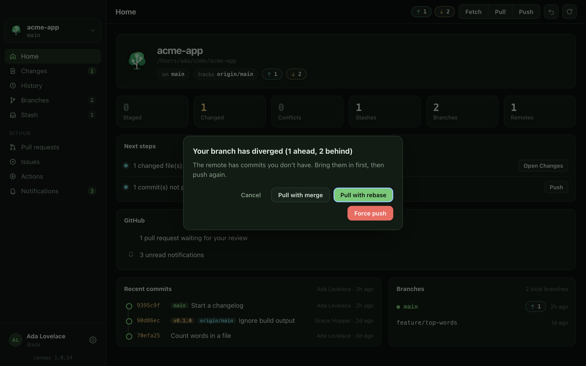

Sync with a remote
Fetch, pull and push, what "ahead" and "behind" mean, and what to do when your branch and the remote have both moved on.
Your repository lives on your computer. A remote (usually called origin) is another copy, for example on GitHub. Three actions move commits between the two: fetch looks, pull brings other people's commits to you, and push sends yours.
The pills in the top bar show where you stand. ↑1 means one commit only you have (ahead). ↓2 means two commits only the remote has (behind). No pills means neither.
In canopy desktop#
Fetch, pull and push#
| Button | What it does | Changes your files? |
|---|---|---|
| Fetch | Downloads what is new on every remote, so the ahead and behind counts are up to date. | No. |
| Pull | Fetches, then brings the remote's new commits into your current branch. | Yes: new commits are added, and a merge or rebase may happen. |
| Push | Sends your new commits to the remote. | No. It changes the remote. |
Fetch is always safe, so use it whenever you like. Pull before you push if the remote may have moved.
- Use Fetch, Pull and Push in the top bar. A progress bar shows git's own progress lines while they run.
- Press Push to send your commits. If the branch has no upstream yet, canopy pushes to the remote of its upstream if it has one, else
origin, else your first remote, and sets the upstream for you. - If you are behind and not ahead, Push says "Nothing to push: pull first." Press Pull instead. If there is nothing to send and nothing to bring in, it says "Nothing to push: already up to date."
- Press Pull on a branch that was never pushed and canopy says it "isn't on the remote yet, so there's nothing to pull." Push it first.
- After a pull or push, the pills update. Undo a pull with ⌘Z (Ctrl+Z on Windows and Linux).
The Pull setting#
In Settings (⌘, (Ctrl+, on Windows and Linux)) under General, the Pull setting decides what Pull does when both sides have new commits. Default follows your git config (pull.rebase), Merge always merges, Rebase always rebases.
When your branch has diverged#
A branch has diverged when you and the remote both have commits the other lacks, for example 1 ahead and 2 behind. Git will not simply push, because that would overwrite the remote's commits. Pressing Push opens "Your branch has diverged" with these choices:
| Button | What happens | Use it when |
|---|---|---|
| Pull with merge | Creates a merge commit joining the two lines. | You want to keep history exactly as it happened. |
| Pull with rebase (highlighted) | Replays your commits on top of the remote's. Then press Push again. Your commits get new hashes. | You want a straight line of history. |
| Force push | Replaces the remote branch with yours. The commits only on the remote are lost from that branch. | You rewrote your own commits on purpose and nobody else has built on them. |
| Cancel | Nothing happens. | You want to look first. |

--force-with-lease. That refuses if someone pushed since your last fetch, which protects their newer work. It still discards whatever is on the remote branch that you have not merged. When unsure, choose a pull.Both pulls can stop on a conflict; see Resolve a merge conflict. The diverged dialog only appears when you press Push. If you press Pull on a diverged branch, git uses your Pull setting, or its own config.
What git runs#
canopy adds --progress to fetch, pull and push so it can show progress; it is left out below except where it always appears.
$ git fetch --prune --all $ git pull $ git pull --rebase $ git pull --no-rebase $ git push origin main $ git push --set-upstream origin main $ git push --force-with-lease origin main
Pull with the Default setting runs plain git pull. Choosing Merge or Rebase in Settings adds --no-rebase or --rebase, and so do the two pull buttons in the diverged dialog. Fetch also prunes remote branches that were deleted on the server. --force-with-lease overwrites the remote only if it is still where you last saw it.
If something goes wrong#
- "This branch isn't on the remote yet, so there's nothing to pull." Push first. The push creates the branch on the remote.
- "No remote is configured." Add one with
git remote add origin <url>in a terminal, or set the repository up with Start a new repository. - "You're not on a branch (detached HEAD), so there's nothing to push." Make a branch first: New branch… on Branches.
- A pull stops on a conflict. Follow Resolve a merge conflict, or press Abort on the banner on Changes.
- Push is rejected for permission. You are not logged in to that remote, or you lack write access. For GitHub, see Working with GitHub.
- You force pushed by mistake. If you still have the old commits locally, the reflog remembers where the branch was. See Undo a mistake.